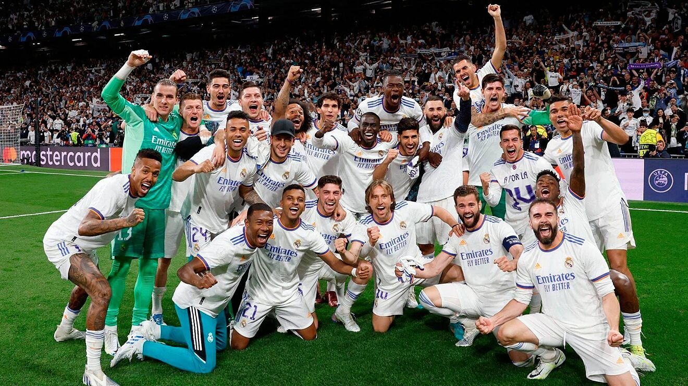
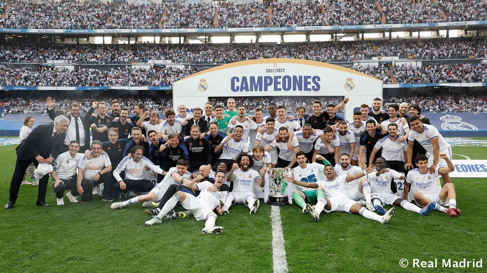
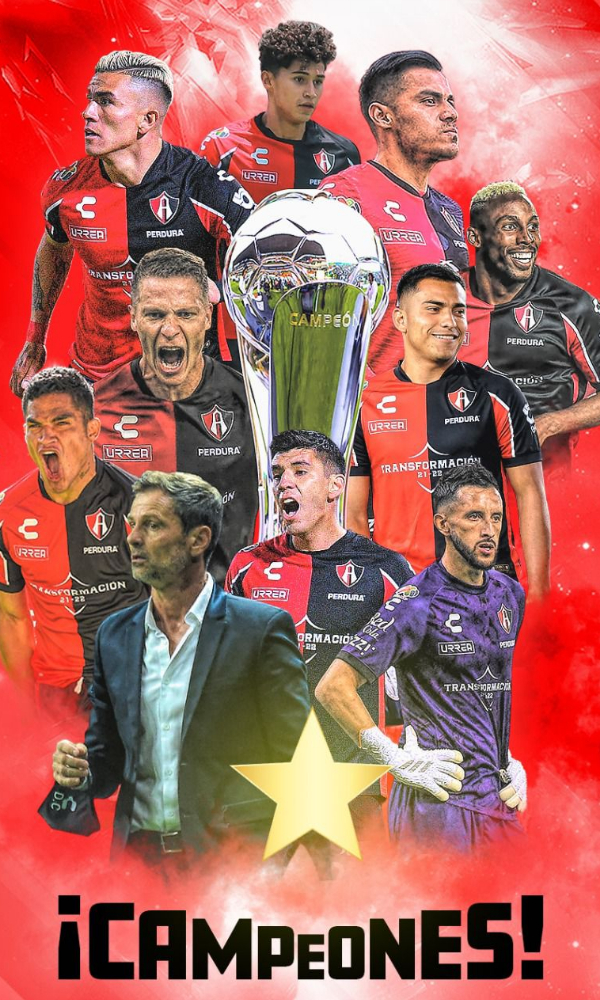
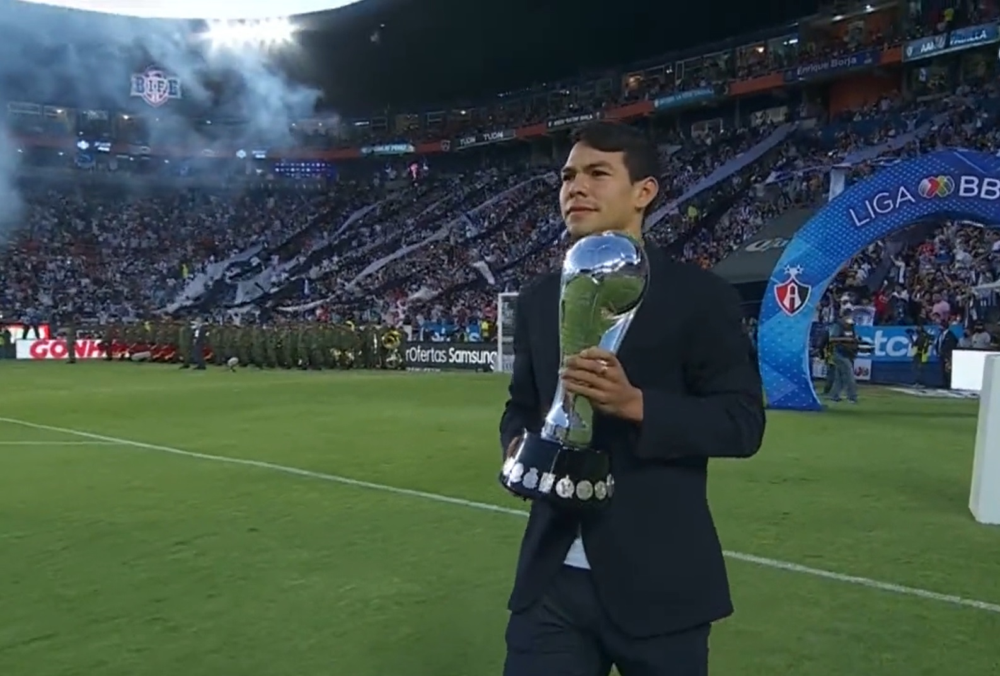
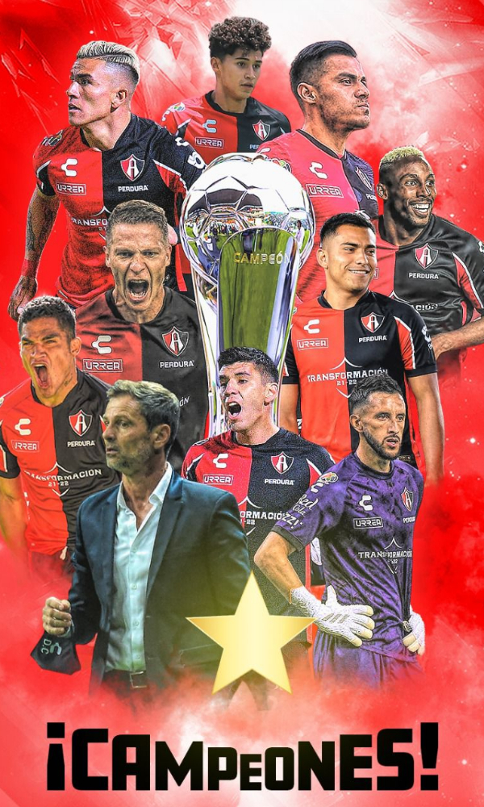
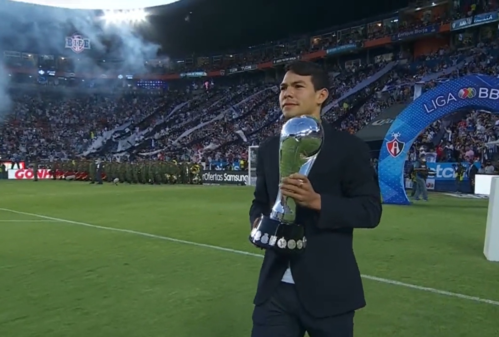

El rey de la competición venció al Liverpool en París y culminó una edición memorable
en la que ha protagonizado momentos épicos que quedarán para siempre en el recuerdo.
Un gol de Vini Jr. en la segunda parte decidió una igualada final en la que Courtois
estuvo inconmensurable y en la que el apoyo del madridismo volvió a ser clave en
el Stade de France.

¡El Madrid conquista la Decimocuarta!
Poco a poco, el Madrid logró rebajar la presión del Liverpool y encadenar varias posesiones largas.
Vini Jr. lo intentaba por la izquierda, pero faltaba generar ocasiones claras sobre la portería de
Alisson. Mientras Salah, de cabeza, volvió a encontrarse con Courtois (34’) y Henderson, con un potente
disparo desde la frontal, no vio portería (41’). Fue la antesala del gol anulado a nuestro equipo.
Valverde pugnó por un balón de Benzema dentro del área y, tras rebotar en Fabinho, volvió a llegar
al delantero francés para que batiera a Alisson. Sin embargo, el árbitro no dio validez al tanto a
instancias del VAR y la final llegó al descanso en tablas.


¡Embajador de lujo! 'Chucky' Lozano, presente en la final Pachuca vs Atlas de la Liga MX.
Salió mejor el Madrid en la reanudación, imprimiendo el ritmo de juego que le interesaba. Y pronto
obtuvo su recompensa. Incorporación por la derecha de Valverde, que centró para que Vini Jr. marcara
a placer en el segundo palo (59’). Con el marcador en contra, el Liverpool adelantó sus líneas. En
el 64’, un disparo colocado de Salah obligó a la estirada de Courtois. Cuatro minutos más tarde,
el belga volvió a salvar ante el delantero egipcio.
La final del Clausura 2022 de la Liga MX está en curso; Pachuca y Atlas buscan coronarse como campeones del
torneo en el Estadio Hidalgo, recinto que tuvo un invitado de lujo, Hirving Lozano. El Chucky Lozano fue el
embajador de la final de vuelta del Clausura 2022 y fue el encargado de llevar el trofeo de campeón hasta
el centro del terreno de juego previo al arranque del partido.
El argentino Julio César Furch empató para Atlas a los 45 minutos por la vía del tiro penal después de que
el árbitro Fernando Hernández lo decretó tras revisar una jugada en el VAR donde el defensor Daniel Aceves
tocó el balón con la mano dentro del área.
Los “Rojinegros” del Atlas consiguieron su tercera estrella tras las obtenidas en la temporada 1950-1951 y
en el torneo Grita México A21 con un marcador global de 3-2 después de ganar 2-0 en el partido de ida.
En el encuentro de vuelta, disputado en el estadio Hidalgo de Pachuca, el equipo local se puso en ventaja
a los ocho minutos por conducto del ecuatoriano Romario Ibarra, quien definió con un disparo dentro del
área tras eludir a dos adversarios.
“Fue una final muy disputada, Pachuca fue un difícil y excelente rival, pero el corazón de este equipo pudo
más para llevarnos el bicampeonato”, dijo a Fox Sports el colombiano Camilo Vargas, portero del Atlas.


Los zorros del Atlas, el equipo representativo del estado de Jalisco, se hizo con el título de bicampeón en
el Estadio Hidalgo, la casa de los Tuzos de la ciudad de Pachuca, quienes a pesar de ganar el partido,
perdieron en el global.
Para más información contactanos en nuestra red social
Facebook
Uriel Jesús Hernández López. Grupo: 638. Capacitación de TIC´S
obtuvo su recompensa. Incorporación por la derecha de Valverde, que centró para que Vini Jr. marcara
a placer en el segundo palo (59’). Con el marcador en contra, el Liverpool adelantó sus líneas. En
el 64’, un disparo colocado de Salah obligó a la estirada de Courtois. Cuatro minutos más tarde,
el belga volvió a salvar ante el delantero egipcio.
La final del Clausura 2022 de la Liga MX está en curso; Pachuca y Atlas buscan coronarse como campeones del
torneo en el Estadio Hidalgo, recinto que tuvo un invitado de lujo, Hirving Lozano. El Chucky Lozano fue el
embajador de la final de vuelta del Clausura 2022 y fue el encargado de llevar el trofeo de campeón hasta
el centro del terreno de juego previo al arranque del partido.
El argentino Julio César Furch empató para Atlas a los 45 minutos por la vía del tiro penal después de que
el árbitro Fernando Hernández lo decretó tras revisar una jugada en el VAR donde el defensor Daniel Aceves
tocó el balón con la mano dentro del área.
Los “Rojinegros” del Atlas consiguieron su tercera estrella tras las obtenidas en la temporada 1950-1951 y
en el torneo Grita México A21 con un marcador global de 3-2 después de ganar 2-0 en el partido de ida.
En el encuentro de vuelta, disputado en el estadio Hidalgo de Pachuca, el equipo local se puso en ventaja
a los ocho minutos por conducto del ecuatoriano Romario Ibarra, quien definió con un disparo dentro del
área tras eludir a dos adversarios.
“Fue una final muy disputada, Pachuca fue un difícil y excelente rival, pero el corazón de este equipo pudo
más para llevarnos el bicampeonato”, dijo a Fox Sports el colombiano Camilo Vargas, portero del Atlas.


Los zorros del Atlas, el equipo representativo del estado de Jalisco, se hizo con el título de bicampeón en
el Estadio Hidalgo, la casa de los Tuzos de la ciudad de Pachuca, quienes a pesar de ganar el partido,
perdieron en el global.
Para más información contactanos en nuestra red social
Facebook
Uriel Jesús Hernández López. Grupo: 638. Capacitación de TIC´S
Uriel Jesús Hernández López. Grupo: 638. Capacitación de TIC´S